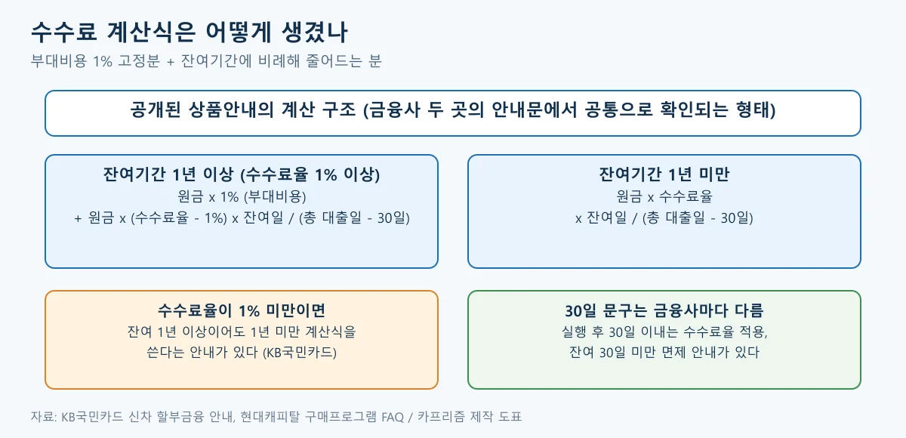
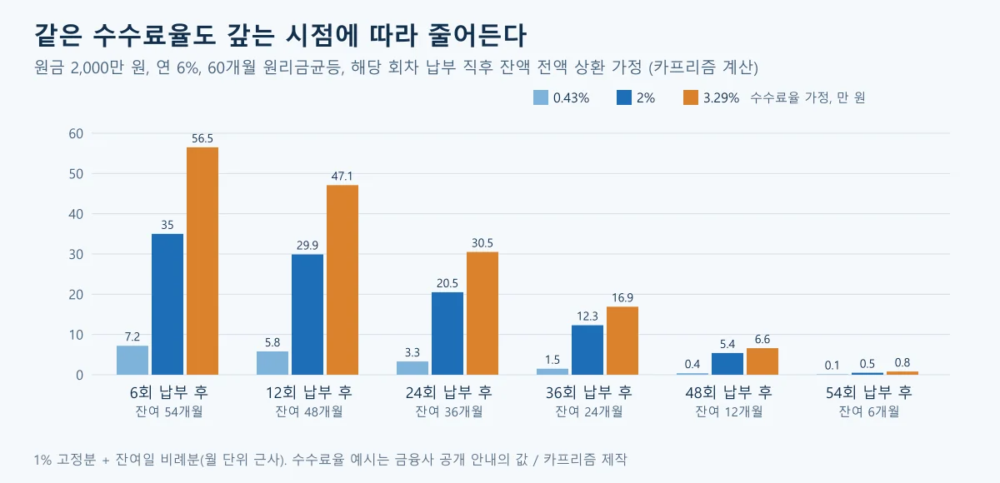
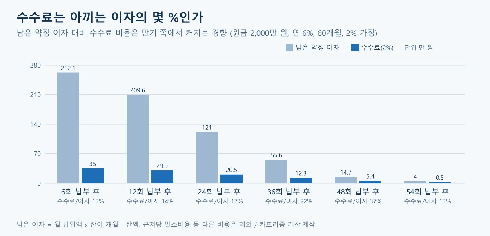
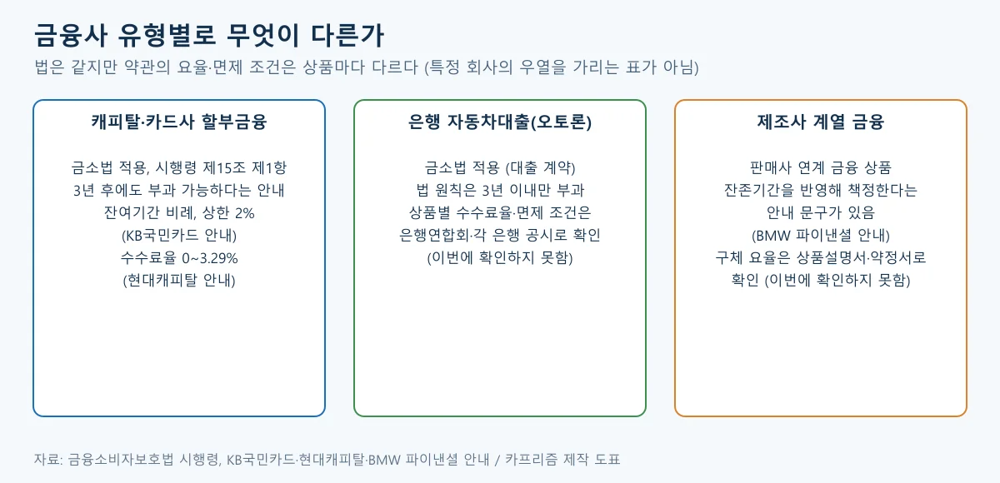
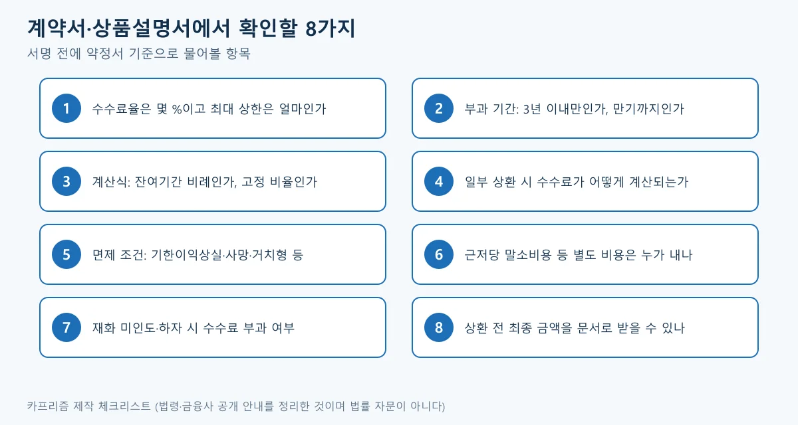

▲ 중도상환수수료 부과 허용 조건의 조문 구조(2026년 10월 21일 현행본 기준, 해당 조문은 2021년 3월 25일 시행 이후 같은 내용). 카프리즘 제작 ⓒ CarPrism 제작
"할부 3년만 버티면 중도상환수수료는 안 낸다던데, 자동차 할부도 그런가?" 보너스를 받았거나 이자가 아까워 할부를 앞당겨 갚으려는 사람이 가장 먼저 부딪히는 질문이다. 그런데 일반 대출과 자동차 할부금융은 3년 기준이 같지 않을 수 있다.
이 글은 금융소비자보호법과 시행령 조문, 금융위원회 보도자료, 금융사가 공개한 상품안내를 근거로 수수료가 붙는 조건, 계산식, 갚는 시점별 금액, 계약서에서 확인할 항목을 정리한다. 금액은 공개된 계산식에 가정 수치를 넣은 카프리즘 계산이며, 특정 금융사나 상품을 권하는 글이 아니다.
1. 자동차 할부는 3년이 지나도 중도상환수수료를 낼 수 있나
할부금융 계약이라면 그럴 수 있다. 금융소비자보호법 제20조 제1항 제4호 나목은 대출성 상품에서 수수료·위약금 등 어떤 명목이든 중도상환수수료를 부과하는 것을 불공정영업행위로 금지하고, 세 가지 경우만 예외로 둔다. 대출계약 성립일부터 3년 이내에 상환하는 경우, 다른 법령에 따라 부과가 허용되는 경우, 그리고 대통령령이 정하는 경우다(2026년 10월 21일 현행본 기준이며, 이 목의 문구는 2021년 3월 25일 시행된 제정 법률부터 같다. 현행 법 시행본의 시행일 2026년 1월 2일은 다른 법 개정에 따른 것이다).
세 번째 "대통령령" 예외가 핵심이다. 금융소비자보호법 시행령 제15조 제1항은 금융소비자가 여신전문금융업법에 따른 시설대여, 연불판매 또는 할부금융 계약을 해지한 경우를 예외로 하되, 계약에 따른 재화를 인도받지 못한 경우와 인도받은 재화에 하자가 있어 정상적 사용이 어려운 경우는 제외한다(현행 시행령 2026년 4월 28일 시행본 기준이며, 이 항은 2021년 3월 25일 제정 시행령부터 같은 문구다). 국가법령정보센터 금융소비자보호법 바로가기
▲ 중도상환수수료 부과 허용 조건의 조문 구조. 카프리즘이 국가법령정보센터 현행 조문(법 2026.1.2 시행본, 시행령 2026.4.28 시행본)을 읽고 정리한 도표. 두 조항의 문구는 2021년 3월 25일 시행본과 같다
| 구분 | 법 원칙 | 확인된 근거 |
|---|---|---|
| 일반 대출(오토론 등) | 원칙 금지, 3년 이내 상환 시 부과 가능 | 금소법 제20조 제1항 제4호 나목 1), 금융위원회 2025.1.9 보도자료 |
| 할부금융 계약 해지 | 시행령 예외로 3년 이후에도 부과 가능(재화 미인도·하자 제외) | 시행령 제15조 제1항, KB국민카드 안내 "3년이 경과해도 부과" |
| 재화 미인도·하자로 정상 사용 곤란 | 시행령 예외 적용 안 됨 | 시행령 제15조 제1항 각 호 |
표처럼 차이가 나는 이유는 할부금융이 금융사가 판매자에게 대금을 대신 지급하고 소비자는 차를 인도받는 3자 계약이라, 법이 대출과 따로 예외를 둔 데 있다. 같은 "자동차 대출"이라는 말이라도 약정서에 할부금융이라 적혀 있는지 오토론이라 적혀 있는지가 먼저 갈린다. 다음 장은 실제 금액이 어떻게 계산되는지를 본다.
2. 수수료는 어떤 계산식으로 나오나 — 1% 고정분과 잔여기간 비례분
공개된 안내 두 곳은 같은 구조다. 잔여기간이 1년 이상이면 "상환원금 x 1%(부대비용)"에 "상환원금 x (수수료율 - 1%) x 잔여기간 / (총 대출기간 - 30일)"을 더하고, 1년 미만이면 "상환원금 x 수수료율 x 잔여기간 / (총 대출기간 - 30일)"로 계산한다. 이는 KB국민카드 신차 할부금융 상품안내와 현대캐피탈 구매프로그램 FAQ에 적힌 식이다.

▲ 금융사 공개 안내에서 확인한 계산식 구조. 금융사·상품마다 달라질 수 있어 실제 계약의 식은 약정서를 따른다. 카프리즘 제작
- KB국민카드: 잔여대출기간에 따라 상환원금의 2% 이내로 차등 부과하고, 잔여대출기간 30일 미만은 면제한다고 안내한다. 수수료율이 1% 미만이면 잔여 1년 이상이어도 1년 미만 식을 쓴다는 단서도 있다(신차 할부금융 상품 예시: 연 4.3~4.5% 고정금리, 12~60개월, 수수료율 0.43%)
- 현대캐피탈: 수수료율을 0~3.29%로 안내하고, 30일 미만 상환 시 사용 기간을 30일로 본다고 적는다. 채무승계 계약은 1%, 거치형 상품은 면제로 안내한다 현대캐피탈 FAQ 바로가기
1% 고정분이 있어 갚는 시점이 만기에 가까워져도 수수료가 곧바로 0이 되지 않는 구조이고, 비례분은 잔여기간이 줄수록 작아진다. 위 두 곳은 어디까지나 공개된 사례이며, 모든 캐피탈이 같은 식을 쓴다고 확인된 것은 아니다. KB국민카드 자동차금융 안내 바로가기
3. 2,000만 원 할부, 몇 회 납부 뒤에 갚으면 얼마인가 (카프리즘 계산)
수수료율 2%를 가정하면 24회 납부 뒤 전액 상환은 약 20.5만 원, 36회 뒤는 약 12.3만 원이다. 가정은 원금 2,000만 원, 연 6%, 60개월 원리금균등(월 약 38.67만 원), 해당 회차 납부 직후 잔액 전액 상환이다. 일수 대신 월 단위로 근사해 잔여개월 / 59를 썼다.
| 납부 회차 | 잔여 | 상환 잔액 | 0.43% | 2% | 3.29% | 남은 약정 이자 |
|---|---|---|---|---|---|---|
| 6회 뒤 | 54개월 | 1,825.8 | 7.2 | 35.0 | 56.5 | 262.1 |
| 12회 뒤 | 48개월 | 1,646.4 | 5.8 | 29.9 | 47.1 | 209.6 |
| 24회 뒤 | 36개월 | 1,271.0 | 3.3 | 20.5 | 30.5 | 121.0 |
| 36회 뒤 | 24개월 | 872.4 | 1.5 | 12.3 | 16.9 | 55.6 |
| 48회 뒤 | 12개월 | 449.3 | 0.4 | 5.4 | 6.6 | 14.7 |
| 54회 뒤 | 6개월 | 228.0 | 0.1 | 0.5 | 0.8 | 4.0 |
같은 2%라도 금액이 크게 달라지는 이유는 수수료의 대부분이 상환 잔액과 잔여기간에 비례하기 때문이다. 수수료율 0.43%는 KB국민카드 상품 예시의 값, 3.29%는 현대캐피탈이 안내한 상한 수치를 가정으로 넣은 것이며 실제 본인 계약의 수수료율과 다를 수 있다. 수수료율이 1% 미만인 열은 1% 미만일 때 잔여 1년 이상에도 1년 미만 식을 쓴다는 KB국민카드 안내에 맞춰 계산했다.

▲ 납부 회차별 수수료. 수수료율 2%에서 6회 뒤 35.0만 원, 24회 뒤 20.5만 원, 48회 뒤 5.4만 원(카프리즘 계산 가정, 단위 만 원)
📍 이 계산의 가정과 빠진 것
- 가정: 원금 2,000만 원, 연 6%, 60개월 원리금균등, 해당 회차 납부 직후 전액 상환. 월 단위 근사(잔여개월 / 59)로 일수 계산과 소액 차이가 날 수 있다
- 금리 가정: 연 6%는 계산 편의를 위한 값이며, 앞에서 소개한 KB국민카드 상품 예시(연 4.3~4.5%)와는 다르다. 금리가 낮으면 상환 잔액과 남은 이자가 달라져 수수료도 달라진다
- 남은 약정 이자: 월 납입액 x 잔여 개월 - 상환 잔액. 이미 낸 이자는 포함하지 않는다
- 제외: 근저당 설정·말소 비용, 인지세, 연체이자, 일부 상환 시 재산정, 금융사별 면제 조건. 실제 청구액은 상환 시점의 금융사 산정이 우선한다

▲ 남은 약정 이자 대비 수수료(2% 가정). 6회 뒤 13%, 24회 뒤 17%, 48회 뒤 37%(카프리즘 계산·제작)
카프리즘 시선
표의 2% 열을 보면 수수료 금액 자체는 갚는 시점이 늦을수록 줄어든다(35.0만 원에서 5.4만 원). 그러나 아낄 수 있는 남은 이자(262.1만 원에서 14.7만 원)는 더 가파르게 줄어, 수수료가 남은 이자에서 차지하는 비중은 6회 뒤 13%에서 48회 뒤 37%로 커진다.
따라서 "수수료가 작아졌으니 지금이 낫다"와 "이자가 많이 남았으니 일찍 갚아야 한다"는 어느 쪽도 금액만으로 판단하기 어렵고, 본인 계약의 수수료율과 남은 이자를 같은 표에 놓고 보는 것이 출발점이다. 이 비율은 위 가정 안에서만 성립하는 계산이다.
4. 캐피탈·은행·제조사 금융은 무엇이 다른가
법 틀은 같고 달라지는 것은 약관의 요율과 면제 조건이다. 아래는 공식·금융사 공개 자료로 확인된 범위만 적은 것이며, 어느 쪽이 유리하다는 비교가 아니다.

▲ 금융사 유형별로 이번에 확인한 범위와 확인하지 못한 범위. 특정 회사의 우열을 가리는 표가 아니다. 카프리즘 제작
▲ 책상 위에 할부 계약서와 계산기를 놓고 상담하는 장면(설명용 AI 생성 예시 이미지). 자동차 할부 상담은 전시장과 금융사 양쪽에서 이뤄진다. ⓒ CarPrism (AI 생성 이미지)
| 유형 | 확인된 내용 | 확인하지 못한 내용 |
|---|---|---|
| 캐피탈·카드사 할부금융 | 3년 후에도 부과 가능(KB국민카드 안내), 수수료율 0~3.29%(현대캐피탈), 2% 이내(KB국민카드), 거치형·기한이익상실·사망 면제 안내 | 다른 금융사의 요율, 업계 공통 모범규준 조문 |
| 은행 자동차대출 | 금소법 적용 대출성 상품이라 법 원칙상 3년 이내 상환에 부과 가능. 금융위 2025년 개편 대상 권역에 은행 포함 | 은행별 자동차대출 수수료율·면제 조건 |
| 제조사 계열 금융 | BMW 파이낸셜 안내에 "중도상환수수료는 잔존기간을 반영해 책정" 문구(문장 일부만 확인) | 제조사별 구체 요율과 계산식 |
금융위원회는 2025년 1월 9일 보도자료에서 수수료가 자금운용 차질에 따른 기회비용과 대출 관련 행정·모집비용 같은 실비용 범위 안에서만 부과되도록 하고, 이를 넘는 항목을 얹으면 불공정영업행위로 금지된다고 밝혔다. 1월 13일 신규 대출분부터 시행이며 적용 권역으로 은행·저축은행·보험·신협 등이 언급됐고, 여전사는 카드대출 등에 수수료를 면제하고 일부 대출은 별도 공시 예정이라고만 적혀 있어 캐피탈 할부금융이 같은 개편 대상인지는 이 자료로 확인할 수 없었다. 금융위원회 보도자료 바로가기
금융사별 수수료율은 여신금융협회 비교공시에서 차량·조건을 넣어 확인할 수 있다고 KB국민카드 안내가 소개한다. 여신금융협회 비교공시 바로가기 금융 상품 3종의 총비용 차이는 할부·리스·렌트 36개월 총비용 기사에서 계산했으니 이 글에서는 수수료에만 집중한다.
5. 수수료를 안 내거나 줄어드는 경우는 언제인가
공개된 안내에서 확인되는 면제·제외 사유는 다섯 가지다. 모두 금융사 안내와 시행령 조문에 적힌 것이며, 내 계약에 적용되는지는 약정서로 확인해야 한다.
| 사유 | 근거 | 유의 |
|---|---|---|
| 차를 인도받지 못한 경우 | 시행령 제15조 제1항 제1호 | 할부금융 해지 시 예외 적용이 제외된다 |
| 하자로 정상 사용이 어려운 경우 | 시행령 제15조 제1항 제2호 | 하자 인정 여부는 별도 절차이며 이 글에서 다루지 않는다 |
| 잔여기간 30일 미만 | KB국민카드 안내 | 금융사마다 30일 규정이 다르다(현대캐피탈은 사용 기간을 30일로 간주) |
| 기한이익상실·채무자 사망 | KB국민카드 안내 | 상속·채무승계 시 현대캐피탈은 채무승계 계약에 1% 안내 |
| 거치형 상품 | 현대캐피탈 FAQ | 상품 구조에 따른 안내이며 일반 할부와 다르다 |
면제 사유가 여럿 보이는 것은 법 예외의 범위가 넓은 만큼 금융사가 약관으로 제외 사유를 따로 정하는 구조이기 때문이다. 다만 법이 허용하는 최대 범위와 금융사가 실제로 정한 범위는 다르다는 점을 같이 봐야 한다.
6. 서명 전 계약서·상품설명서에서 확인할 8가지
수수료율 숫자 하나가 아니라 부과 기간·계산식·별도 비용까지 봐야 한다. 상품설명서와 약정서에서 아래 항목을 찾아 형광펜으로 표시해 두면 상환 시점에 금액을 미리 어림해 볼 수 있다.

▲ 중도상환수수료 확인 8항목. 법령·금융사 공개 안내를 정리한 카프리즘 제작 체크리스트이며 법률 자문이 아니다
▲ 상환 일정표와 잔액을 확인하는 장면(설명용 AI 생성 예시 이미지). 계약서에 서명하기 전에 수수료율·부과 기간·계산식을 문서로 확인한다. ⓒ CarPrism (AI 생성 이미지)
✅ 계약 전 확인 질문 8가지
- 수수료율은 몇 %이고 상한은 얼마인가? 금리와 연동되는지도 묻는다(현대캐피탈 안내는 고객금리에 따라 0~3.29%)
- 부과 기간은 3년 이내인가, 만기까지인가? 할부금융은 3년 후에도 부과될 수 있다
- 계산식은 잔여기간 비례인가, 고정 비율인가? 1% 고정분이 있는지 확인한다
- 일부만 갚을 때 계산은? 상환 원금 기준인지, 남은 기간을 어떻게 세는지
- 면제 조건은? 30일 미만, 기한이익상실, 사망·승계, 거치형 같은 항목이 약정서에 있는지
- 근저당 말소 비용 등 별도 비용은 누가 내나? KB국민카드 안내는 설정 비용은 회사가, 말소 비용은 채무자가 부담한다고 적는다
- 차를 못 받았거나 하자가 있을 때 수수료는? 시행령은 이 경우를 예외 적용에서 제외한다
- 상환 전에 최종 금액을 문서로 받을 수 있나? 상환 시점 산정액을 먼저 확인한다
일찍 갚을지 말지를 고민하는 사람은 위 8가지를 받아 둔 뒤 3장 표처럼 본인 계약 수치로 다시 계산하면 된다. 리스·렌트의 중도해지는 구조 자체가 달라서 리스·장기렌트 중도해지 위약금 기사에서 따로 다뤘고, 할부·리스·현금의 큰 틀은 리스·할부·현금 비교 기사에 있다.
7. 주의할 점과 이 글이 확인하지 못한 것
- 약관이 우선한다: 계산식·수수료율은 금융사 공개 안내 두 곳(KB국민카드, 현대캐피탈)에서 확인한 값이다. 내 계약의 약정서가 이 글과 다르면 약정서가 맞다.
- 은행·제조사 금융: 은행 자동차대출 수수료율과 제조사 계열 금융의 구체 요율은 확인하지 못했다(BMW 파이낸셜은 "잔존기간 반영" 문구만 확인).
- 캐피탈과 2025년 개편: 금융위원회 2025년 1월 9일 보도자료만으로는 캐피탈 할부금융이 실비용 규율 대상인지 확인할 수 없었다.
- 금융감독원·여신금융협회 모범규준: 이번 조사에서 자동차 할부에 직접 적용되는 모범규준의 조문과 "잔여기간 비례" 규정의 근거 조항은 확인하지 못했다. 금융감독원 금융소비자 정보포털 파인 파인 바로가기 에서 자동차 할부 관련 안내가 있는지도 직접 찾지 못했다.
- 계산 근사: 월 단위 근사이며 일수·일부 상환·연체는 반영하지 않았다.
- 법 개정 가능성: 국가법령정보센터 현행본(법 2026년 1월 2일 시행본, 시행령 2026년 4월 28일 시행본) 기준이다. 제20조 제1항 제4호 나목과 시행령 제15조 제1항의 문구는 2021년 3월 25일 시행 이후 바뀌지 않았다. 이후 개정은 국가법령정보센터에서 확인한다.
8. 요약
금융소비자보호법 제20조 제1항 제4호 나목은 대출성 상품의 중도상환수수료를 원칙적으로 금지하고 3년 이내 상환 등을 예외로 두며, 시행령 제15조 제1항은 할부금융 해지를 예외에 넣어 3년이 지나도 부과될 수 있다(재화 미인도·하자 제외). KB국민카드는 "3년이 경과해도 부과, 상환원금의 2% 이내"로 안내한다(2026년 10월 21일 기준).
공개된 계산식은 상환원금 x 1%에 잔여기간 비례분을 더하는 구조이고, 2,000만 원·연 6%·60개월·수수료율 2% 가정에서 24회 뒤 전액 상환은 약 20.5만 원, 48회 뒤는 약 5.4만 원이다(카프리즘 계산). 은행·제조사 금융의 요율과 캐피탈의 2025년 개편 적용 여부는 확인하지 못했다.
서명 전에는 수수료율과 상한, 부과 기간, 계산식, 일부 상환 계산, 면제 조건, 별도 비용, 미인도·하자 시 처리, 상환 전 최종 금액 문서화 8가지를 약정서에서 확인하고 본인 수치로 다시 계산해 보자.
📚 함께 읽으면 좋은 글
- 비용 · 할부·리스·렌트 36개월 총비용 비교
- 계약 · 리스·장기렌트 중도해지 위약금
- 금융 · 리스·할부·현금 비교 가이드
- 첫차 · 첫차 첫 1년 숨은 비용